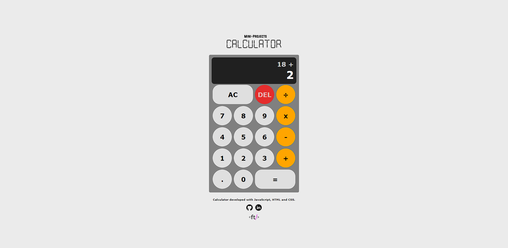
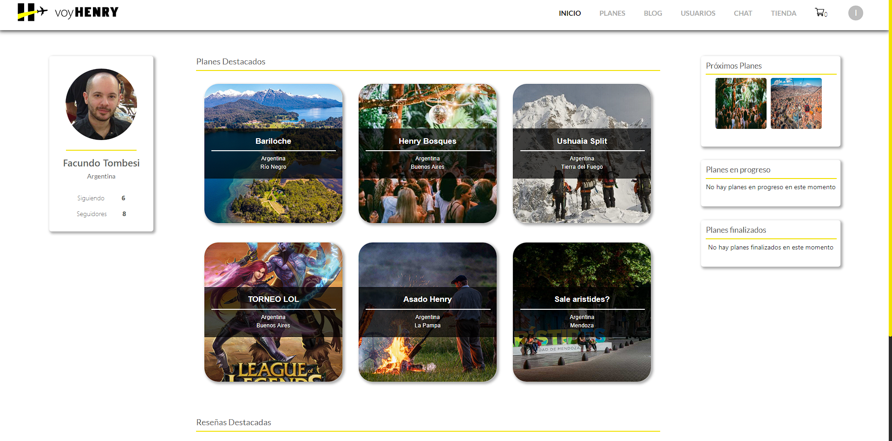

Snake Game
This is a project part of my Mini-Projects collection about the classic game Snake. This game was made entirely with JavaScript, HTML and CSS and all assets were made by me, including snake head and body, food, title image, favicon and even the background (I know it's horrible, I'm not an artist). The game features different difficulty levels, a score system and a quick restart button so you don't have to refresh the page.

